पिछले अध्याय में हमने बेल्जियम और श्रीलंका के उदाहरण देखे। बेल्जियम के संविधान में प्रमुख बदलाव यह किया गया कि केंद्रीय सरकार की शक्तियों में कमी करके प्रांतीय सरकारों को स्वतंत्र संवैधानिक अधिकार दिए गए। इस प्रकार बेल्जियम एकात्मक शासन से बदलकर संघात्मक शासन में परिवर्तित हो गया। इसके विपरीत, श्रीलंका में व्यावहारिक रूप से एकात्मक शासन व्यवस्था ही बनी रही, जिसमें राष्ट्रीय सरकार के पास ही सारी शक्तियां केंद्रित थीं।
💡 संघवाद की मानक परिभाषा
संघवाद: शासन की वह लोकतांत्रिक व्यवस्था है जिसमें सर्वोच्च सत्ता एक केंद्रीय प्राधिकरण और उसकी विभिन्न आनुषंगिक प्रांतीय/राज्य इकाइयों के बीच बंटी होती है।
- आम तौर पर संघीय व्यवस्था में दो स्तरों की सरकारें होती हैं—एक पूरे देश के लिए (राष्ट्रीय विषयों हेतु) और दूसरी राज्यों या प्रांतों के स्तर पर (दैनिक शासन-प्रशासन हेतु)।
- दोनों ही स्तर की सरकारें अपने-अपने अधिकार क्षेत्र में पूरी तरह स्वतंत्र होती हैं।

| तुलना का आधार | एकात्मक शासन | संघात्मक शासन |
|---|---|---|
| सरकारों के स्तर | शासन का केवल एक ही स्तर होता है; या बाकी इकाइयां केंद्र के अधीन होती हैं। | दो या दो से अधिक स्तरों की स्वतंत्र सरकारें होती हैं (केंद्र, राज्य व स्थानीय)। |
| शक्तियों का स्रोत | प्रांतीय सरकारों को अपनी शक्तियां केंद्र की मर्जी से मिलती हैं; केंद्र जब चाहे उन्हें वापस ले सकता है। | शक्तियां सीधे देश के सर्वोच्च संविधान द्वारा तय की जाती हैं; केंद्र राज्यों की शक्तियां छीन नहीं सकता। |
| आदेश देने की शक्ति | केंद्रीय सरकार राज्य या स्थानीय सरकारों को कोई भी आदेश दे सकती है। | केंद्रीय सरकार राज्य सरकार को कुछ खास करने का मनमाना हुक्म नहीं दे सकती। |
| जवाबदेही | राज्य सरकारें केवल केंद्र सरकार के प्रति जवाबदेह होती हैं। | राज्य सरकारें केंद्र के अधीन नहीं हैं; वे सीधे अपनी जनता के प्रति जवाबदेह होती हैं। |
| उदाहरण देश | ब्रिटेन, श्रीलंका, फ्रांस, चीन। | भारत , संयुक्त राज्य अमेरिका, बेल्जियम, कनाडा, ऑस्ट्रेलिया। |
संघात्मक शासन व्यवस्था की पहचान उसके संविधान में अंतर्निहित 7 मूलभूत संवैधानिक सिद्धांतों से होती है। बोर्ड परीक्षा में यह प्रश्न 5 अंकों का सबसे महत्वपूर्ण दीर्घ उत्तरीय प्रश्न है:

संघात्मक व्यवस्था में शासन की सत्ता किसी एक संस्था में केंद्रित नहीं होती, बल्कि कम से कम दो स्तरों में बंटी होती है। भारत जैसे विशाल देश में 1992 में विकेंद्रीकरण के बाद तीसरा स्तर भी जोड़ा गया:
- केंद्रीय सरकार: पूरे देश के लिए राष्ट्रीय महत्व के विषयों (रक्षा, विदेश, रेलवे) की देखभाल करती है।
- राज्य सरकारें: प्रांतीय स्तर पर कानून-व्यवस्था, कृषि, शिक्षा और स्थानीय विकास की देखभाल करती हैं।
- स्थानीय निकाय: ग्राम पंचायत और नगर पालिकाएं, जो जमीनी समस्याओं का प्रत्यक्ष समाधान करती हैं।

अलग-अलग स्तर की सरकारें एक ही नागरिक समूह पर शासन करती हैं, लेकिन कानून बनाने, कर वसूलने और प्रशासन चलाने का प्रत्येक स्तर का अपना संविधान-सम्मत निश्चित दायरा यानी 'अधिकार क्षेत्र' होता है:
- एक ही नागरिक पर दोहरी व्यवस्था: एक भारतीय नागरिक केंद्र के कानूनों (जैसे आयकर, पासपोर्ट, सेना नियम) का भी पालन करता है और अपनी राज्य सरकार के कानूनों (जैसे पुलिस व्यवस्था, कृषि नीतियां, जमीन रजिस्ट्री) का भी पालन करता है।
- दोनों स्तरों के कार्यक्षेत्र एक-दूसरे से पूरी तरह अलग और स्पष्ट होते हैं।

विभिन्न स्तरों की सरकारों के अधिकार क्षेत्र संविधान में स्पष्ट रूप से लिखित होते हैं:
- संविधान प्रत्येक स्तर की सरकार के अस्तित्व और प्राधिकार की कानूनी गारंटी देता है।
- एकात्मक देशों की तरह केंद्र सरकार जब चाहे तब एक साधारण सरकारी आदेश से राज्य सरकारों को भंग या समाप्त नहीं कर सकती।

संविधान के बुनियादी और संघीय प्रावधानों को कोई भी एक स्तर की सरकार अकेले नहीं बदल सकती:
- कठोर संशोधन प्रक्रिया: केंद्र सरकार अपनी मर्जी से राज्यों के अधिकार छीनने वाला कोई संशोधन अकेले पास नहीं कर सकती।
- अनिवार्य शर्त: ऐसे संशोधनों के लिए संसद के दोनों सदनों में 2/3 विशेष बहुमत के साथ-साथ कम से कम 50% राज्यों की विधानसभाओं का लिखित अनुमोदन अनिवार्य होता है।

अदालतों को संविधान और विभिन्न स्तरों की सरकारों के अधिकारों की व्याख्या करने का सर्वोच्च अधिकार है:
- अंपायर की भूमिका: जब कभी केंद्र और राज्यों के बीच अधिकारों या सीमाओं को लेकर कोई टकराव होता है, तो सर्वोच्च न्यायालय निष्पक्ष अंपायर की तरह संविधान के नियमों को देखकर अंतिम निर्णय सुनाता है।
- अदालत का फैसला दोनों स्तरों की सरकारों पर अंतिम रूप से बाध्यकारी होता है।

सरकारों की स्वायत्तता केवल कागजों पर न रहे, इसलिए संविधान में प्रत्येक स्तर की सरकार के लिए राजस्व (कमाई) के अलग-अलग स्रोत तय किए गए हैं:
- राज्य सरकारों को अपने दैनिक कार्यों, स्कूलों, अस्पतालों और पुलिस के खर्चे के लिए केंद्र के सामने हाथ फैलाने की आवश्यकता नहीं होती।
- केंद्र के पास आयकर, सीमा शुल्क, कॉर्पोरेट टैक्स हैं; राज्यों के पास राज्य GST, भू-राजस्व, स्टांप ड्यूटी और वाहन कर हैं। साथ ही वित्त आयोग केंद्रीय राजस्व में राज्यों की हिस्सेदारी तय करता है।

संघीय शासन व्यवस्था दो परस्पर जुड़े हुए पवित्र उद्देश्यों को एक साथ सिद्ध करती है:
- पहला उद्देश्य: देश की एकता और अखंडता की रक्षा करना और उसे बढ़ावा देना।
- दूसरा उद्देश्य: इसके साथ ही क्षेत्रीय, भाषाई और सांस्कृतिक विविधताओं का पूरा सम्मान करना।
- आदर्श संघवाद का आधार: एक सफल संघीय व्यवस्था के दो मुख्य तत्व हैं—आपसी विश्वास और साथ रहने की सहमति।

दुनिया में विभिन्न संघीय देश अलग-अलग ऐतिहासिक परिस्थितियों में बने हैं। आम तौर पर संघीय व्यवस्थाओं का गठन दो प्रमुख मार्गों से हुआ है:

| तुलना का आधार | 1. साथ आकर संघ बनाना | 2. साथ लेकर संघ बनाना |
|---|---|---|
| गठन की प्रक्रिया | दो या अधिक स्वतंत्र संप्रभु राष्ट्र अपनी सुरक्षा और संप्रभुता बढ़ाने के लिए अपनी मर्जी से साथ आकर एक बड़ा संघ बनाते हैं। | एक बड़ा देश अपनी आंतरिक विविधता और विशाल जनसंख्या को ध्यान में रखकर शक्तियों को केंद्र और राज्यों में बांटता है। |
| शक्तियों का संतुलन | आमतौर पर प्रांतों को समान अधिकार होते हैं और वे केंद्र जितने ही शक्तिशाली होते हैं। | राज्यों की तुलना में केंद्र सरकार अधिक शक्तिशाली होती है; कुछ राज्यों को विशेष दर्जा भी मिलता है। |
| पहचान व संप्रभुता | राज्य अपनी अलग पहचान और संप्रभुता को बनाए रखते हुए एक साझा सुरक्षा छत्र बनाते हैं। | राष्ट्रीय एकता सर्वोपरि होती है और देश के भीतर प्रशासनिक इकाइयां बनाई जाती हैं। |
| उदाहरण देश | संयुक्त राज्य अमेरिका, स्विट्जरलैंड, ऑस्ट्रेलिया। | भारत , स्पेन, बेल्जियम। |
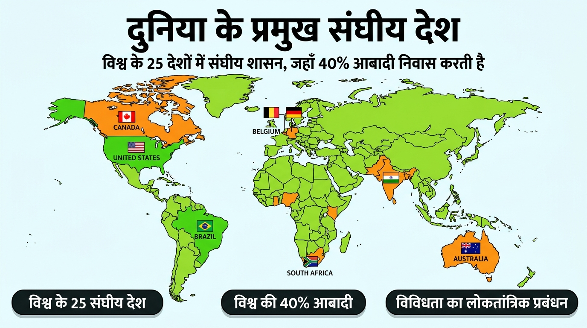
भारत एक बहुत बड़ी भाषाई, धार्मिक और सांस्कृतिक विविधता वाला देश है। विभाजन के दर्दनाक दौर से गुजरने के बाद भारतीय संविधान ने भारत को 'राज्यों का संघ' घोषित किया। यद्यपि संविधान में 'फेडरेशन' शब्द का प्रयोग नहीं किया गया, परंतु भारतीय संघ का आधार पूरी तरह संघीय शासन के सिद्धांतों पर ही टिका है।
संविधान ने केंद्र और राज्य सरकारों के बीच कानून बनाने के अधिकारों को स्पष्ट रूप से तीन सूचियों में विभाजित किया है:

- 1. संघ सूची: इसमें राष्ट्रीय महत्व के विषय शामिल हैं, जिन पर पूरे देश में एक जैसी नीतियों की आवश्यकता होती है। जैसे—प्रतिरक्षा, विदेशी मामले, बैंकिंग, संचार और मुद्रा। इन विषयों पर कानून बनाने का अधिकार केवल केंद्र सरकार को है।
- 2. राज्य सूची: इसमें प्रांतीय और स्थानीय महत्व के विषय आते हैं। जैसे—पुलिस, व्यापार, वाणिज्य, कृषि और सिंचाई। इन विषयों पर कानून बनाने का अधिकार केवल राज्य सरकारों को है।
- 3. समवर्ती सूची: इसमें वे विषय आते हैं जो केंद्र और राज्य दोनों के साझा हित के हैं। जैसे—शिक्षा, वन, मजदूर संघ, विवाह, गोद लेना और उत्तराधिकार। इन विषयों पर केंद्र और राज्य दोनों कानून बना सकते हैं।
⚠️ टकराव की स्थिति: यदि दोनों के कानूनों में कोई टकराव हो, तो केंद्र सरकार का बनाया कानून ही मान्य होगा।
⚡ बाकी बचे विषय: अवशिष्ट शक्तियाँ
जो विषय संविधान बनने के समय अस्तित्व में नहीं थे (जैसे—कंप्यूटर सॉफ्टवेयर, इंटरनेट, साइबर कानून व ई-कॉमर्स), वे संविधान के अनुसार 'अवशिष्ट विषय' कहलाते हैं। हमारे संविधान के अनुसार अवशिष्ट विषयों पर कानून बनाने का अधिकार केवल केंद्र सरकार (संसद) को दिया गया है।
भारतीय संघ 'साथ लेकर संघ' का उदाहरण है, इसलिए यहाँ सभी राज्यों को बराबर अधिकार नहीं दिए गए हैं:
- पूर्वोत्तर राज्यों को विशेष दर्जा (अनुच्छेद 371): असम, नागालैंड, अरुणाचल प्रदेश और मिजोरम जैसे राज्यों को उनकी विशिष्ट ऐतिहासिक व सामाजिक परिस्थितियों के कारण अनुच्छेद 371 के तहत विशेष शक्तियां प्राप्त हैं। ये शक्तियां मूल जनजातियों के जमीन के अधिकारों, पारंपरिक कानूनों और स्थानीय संस्कृति की रक्षा हेतु दी गई हैं। बाहरी व्यक्ति यहाँ आसानी से जमीन नहीं खरीद सकते।
- केंद्र शासित प्रदेश: कुछ इलाके इतने छोटे हैं कि उन्हें स्वतंत्र राज्य नहीं बनाया जा सकता और न ही किसी पड़ोसी राज्य में मिलाया जा सकता (जैसे—चंडीगढ़, लक्षद्वीप, राजधानी दिल्ली और अंडमान)। इन क्षेत्रों को केंद्र शासित प्रदेश कहा जाता है। इन्हें किसी राज्य जैसे अधिकार नहीं हैं और इनका प्रशासन सीधे केंद्र सरकार चलाती है।
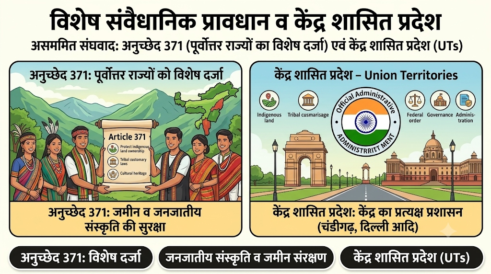
भारत में संघवाद की वास्तविक सफलता केवल संवैधानिक प्रावधानों के कारण नहीं, बल्कि हमारे देश की लोकतांत्रिक राजनीति की परिपक्वता के कारण संभव हुई है:
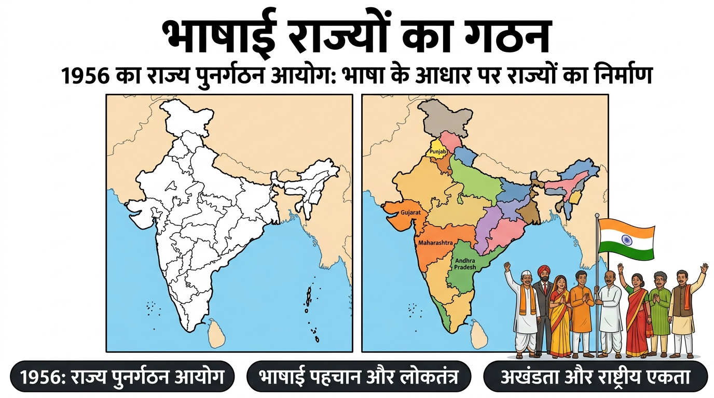
1. भाषाई राज्यों का गठन: 1947 में भारत के कई पुराने राज्यों की सीमाएं बदलकर नए राज्य बनाए गए ताकि एक भाषा बोलने वाले लोग एक ही राज्य में रह सकें। शुरुआती दौर में कुछ नेताओं को डर था कि भाषाई राज्यों से देश टूट जाएगा, लेकिन अनुभव ने यह साबित कर दिया कि भाषाई राज्यों के बनने से देश ज्यादा एकीकृत और मजबूत हुआ तथा प्रशासन भी आसान हो गया।
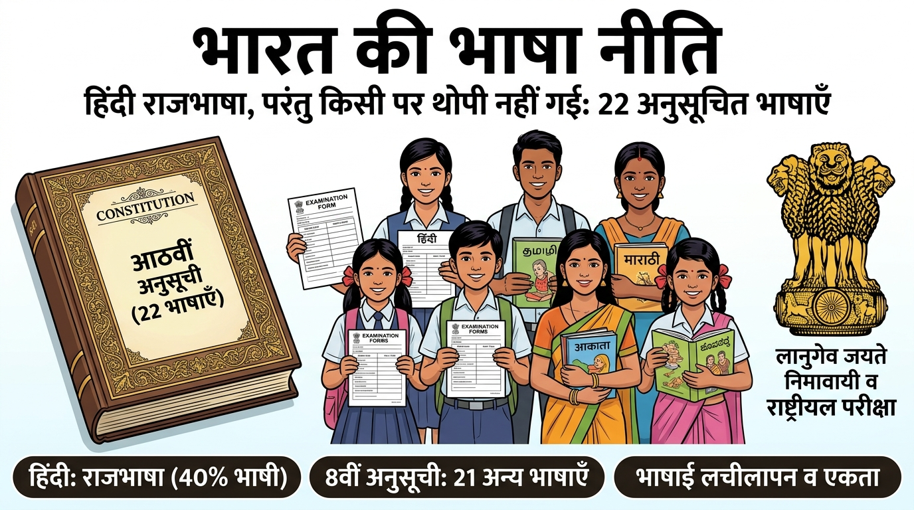
2. भारत की संतुलित भाषा नीति: हमारे संविधान ने किसी एक भाषा को राष्ट्रभाषा घोषित नहीं किया। हिंदी को राजभाषा का दर्जा दिया गया, लेकिन हिंदी केवल 40% भारतीयों की मातृभाषा है। इसलिए अन्य भाषाओं के संरक्षण हेतु संविधान की आठवीं अनुसूची में हिंदी के अलावा 21 अन्य भाषाओं को 'अनुसूचित भाषा' का दर्जा दिया गया। केंद्र सरकार की किसी परीक्षा में उम्मीदवार इनमें से किसी भी भाषा में पर्चा देने का विकल्प चुन सकता है।
संवैधानिक प्रावधानों के अतिरिक्त, केंद्र-राज्य संबंध इस बात पर निर्भर करते हैं कि सत्ताधारी दल और नेता इन प्रावधानों का किस प्रकार पालन करते हैं:
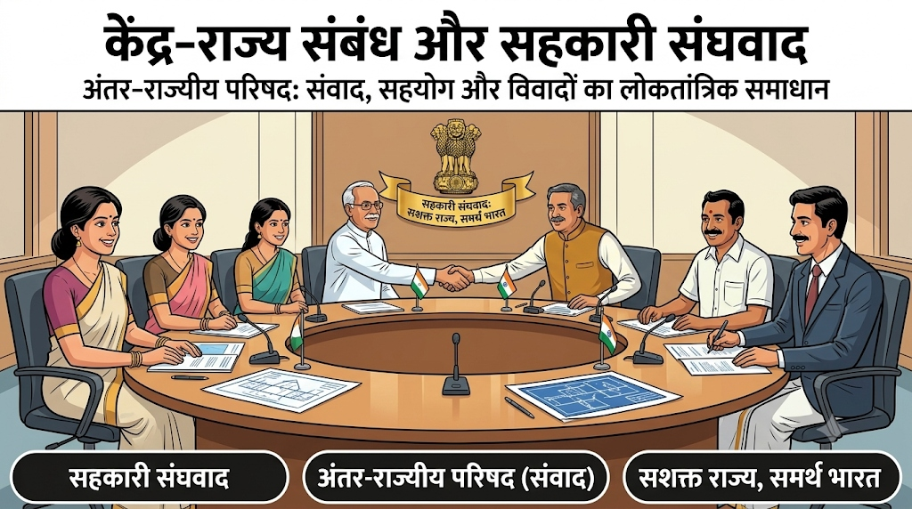
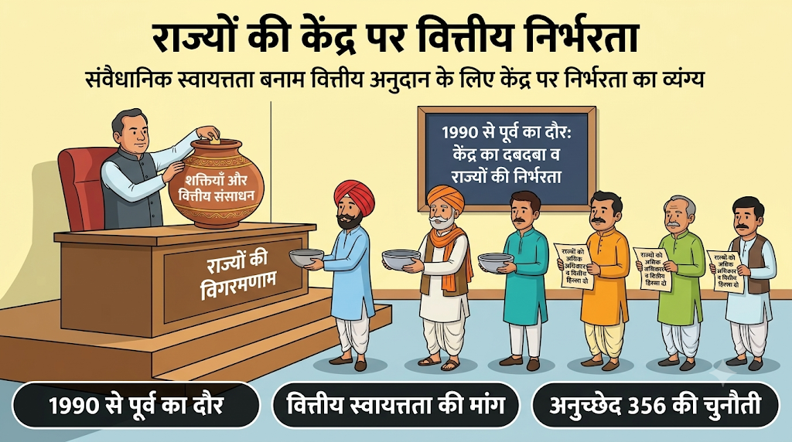
1990 के बाद भारतीय राजनीति में एक युगांतकारी परिवर्तन आया। इस अवधि में देश के अनेक राज्यों में क्षेत्रीय राजनीतिक दलों का तीव्र उभार हुआ। चूंकि लोकसभा में किसी एक दल को स्पष्ट बहुमत नहीं मिला, इसलिए प्रमुख राष्ट्रीय दलों को कई क्षेत्रीय दलों के साथ मिलकर गठबंधन सरकार बनानी पड़ी।
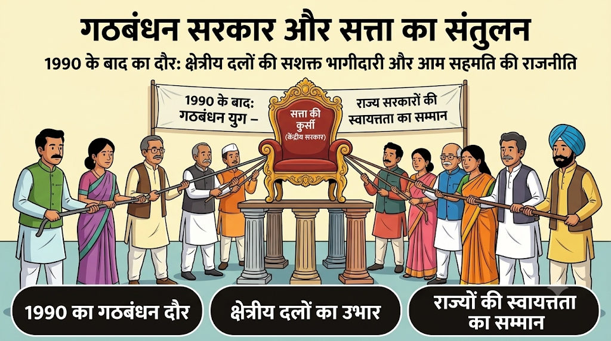
- राज्यों की स्वायत्तता का सम्मान: गठबंधन सरकारों के कारण केंद्र सरकार मनमाने ढंग से राज्य सरकारों को बर्खास्त नहीं कर सकी।
- सर्वोच्च न्यायालय का ऐतिहासिक फैसला: सर्वोच्च न्यायालय ने एक ऐतिहासिक फैसले (एस.आर. बोम्मई मामला) द्वारा अनुच्छेद 356 के दुरुपयोग पर कड़ी रोक लगा दी, जिससे राज्य सरकारों की संवैधानिक सुरक्षा कई गुना बढ़ गई।
भारत जैसे विशाल देश में केवल दो स्तरों की सरकारों से काम नहीं चल सकता। भारत के कई राज्य यूरोप के स्वतंत्र देशों से भी बड़े हैं—जैसे उत्तर प्रदेश की जनसंख्या रूस से बड़ी है और महाराष्ट्र की आबादी लगभग जर्मनी जितनी है। इसलिए भारत में सत्ता के विकेंद्रीकरण की आवश्यकता महसूस हुई।
💡 विकेंद्रीकरण की परिभाषा
विकेंद्रीकरण: जब सत्ता केंद्र और राज्य सरकारों से लेकर स्थानीय सरकारों (पंचायतों और नगर पालिकाओं) को दी जाती है, तो इसे सत्ता का विकेंद्रीकरण कहते हैं।
- मूल तर्क: अनेक समस्याओं और मुद्दों का समाधान स्थानीय स्तर पर ही सबसे अच्छे ढंग से हो सकता है। लोगों को अपने इलाके की समस्याओं की बेहतर समझ होती है और उन्हें यह भी पता होता है कि पैसा कहाँ खर्च होना चाहिए और चीजों का सही उपयोग कैसे हो सकता है।
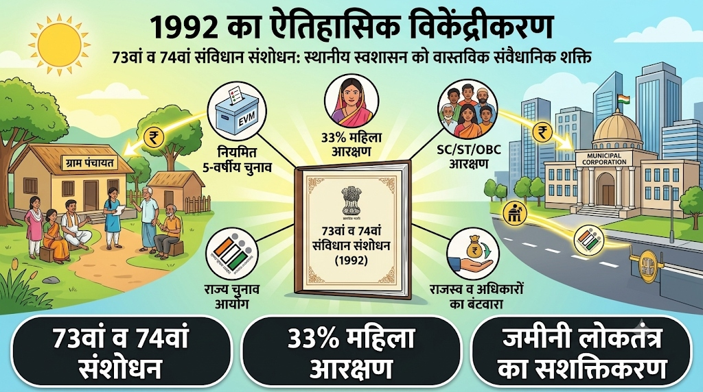
- नियमित चुनाव की बाध्यता: अब स्थानीय स्वशासी निकायों के चुनाव नियमित रूप से हर 5 वर्ष में कराना एक अनिवार्य संवैधानिक बाध्यता है।
- कमजोर वर्गों का आरक्षण: निर्वाचित निकायों के सदस्य और पदाधिकारियों के पदों में अनुसूचित जातियों, अनुसूचित जनजातियों और अन्य पिछड़े वर्गों के लिए सीटें आरक्षित हैं।
- 33% महिला आरक्षण: कम से कम एक-तिहाई पद महिलाओं के लिए अनिवार्य रूप से आरक्षित किए गए हैं।
- राज्य चुनाव आयोग का गठन: हर राज्य में पंचायत और नगरपालिका चुनाव कराने के लिए राज्य चुनाव आयोग नामक स्वतंत्र संस्था का गठन किया गया है।
- राजस्व व अधिकारों का बंटवारा: राज्य सरकारों को अपने राजस्व और अधिकारों का कुछ हिस्सा इन स्थानीय निकायों को देना अनिवार्य किया गया है।
73वें और 74वें संशोधन की सबसे युगांतकारी उपलब्धि यह रही कि इसने भारतीय लोकतंत्र में महिलाओं की भागीदारी को विश्व में सबसे ऊंचे स्तर पर पहुंचा दिया:
- 33% अनिवार्य आरक्षण: ग्रामीण पंचायतों और शहरी नगर निकायों में कम से कम एक-तिहाई सीटें और अध्यक्ष पद महिलाओं हेतु आरक्षित किए गए। कई राज्यों (जैसे बिहार, मध्य प्रदेश, राजस्थान) ने इसे बढ़ाकर 50% तक कर दिया है।
- 10 लाख से अधिक महिला प्रतिनिधि: आज भारत के स्थानीय निकायों में 10 लाख से अधिक निर्वाचित महिलाएं शासन चला रही हैं। इसने ग्रामीण महिलाओं में आत्मविश्वास, निर्णय क्षमता और सामाजिक प्रतिष्ठा को अभूतपूर्व बढ़ावा दिया है।
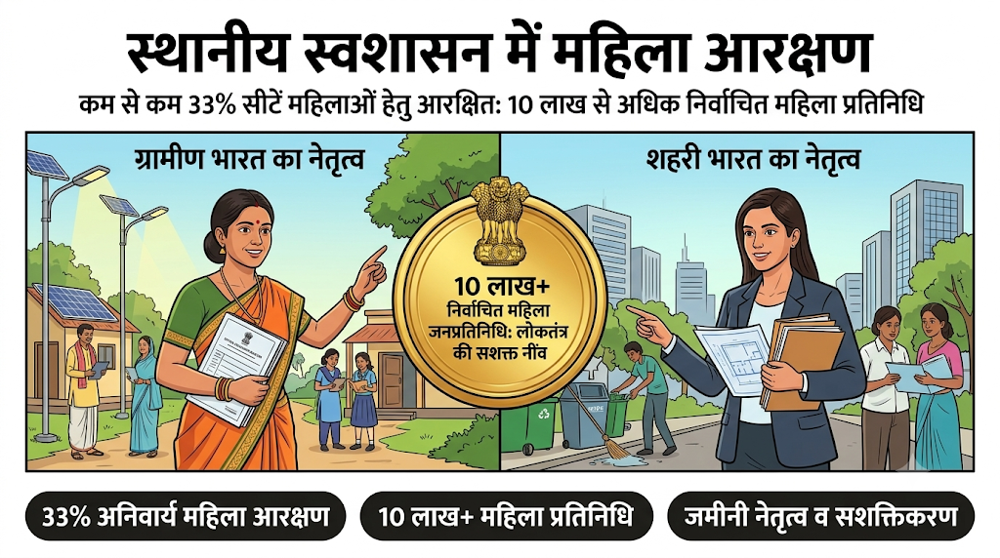
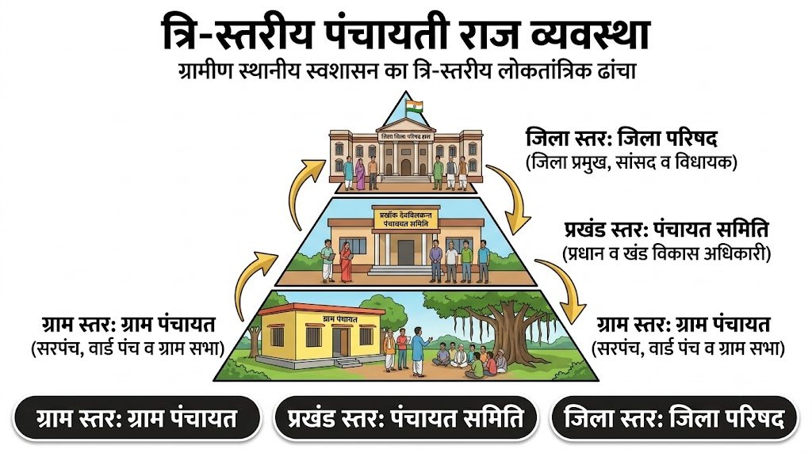
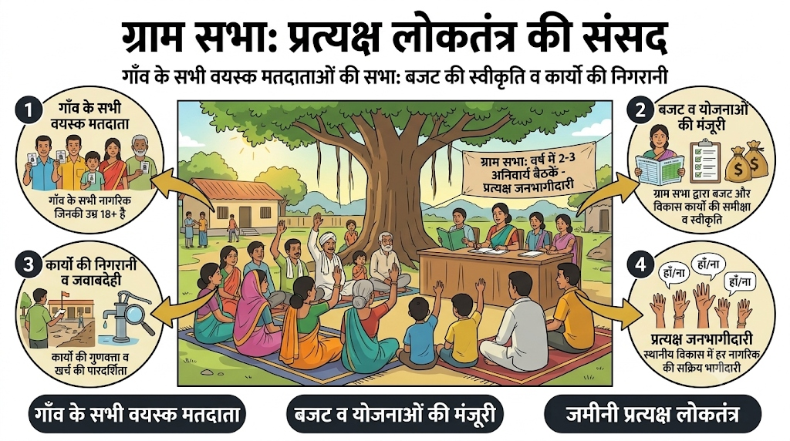
प्रत्येक गाँव में एक ग्राम पंचायत होती है जो कई वार्डों में बंटी होती है। प्रत्येक वार्ड से एक प्रतिनिधि चुना जाता है जिसे वार्ड पंच कहते हैं। पंचायत के मुखिया को सरपंच कहा जाता है। लेकिन पूरी ग्राम पंचायत ग्राम सभा की देखरेख में काम करती है:
- गाँव के सभी मतदाता (जिनकी उम्र 18 वर्ष या उससे अधिक है) ग्राम सभा के सदस्य होते हैं।
- ग्राम सभा साल में कम से कम 2 या 3 बार बैठक करती है, जिसमें ग्राम पंचायत का वार्षिक बजट पास किया जाता है और उसके प्रदर्शन की समीक्षा की जाती है।
गाँवों की ही तरह 74वें संविधान संशोधन द्वारा शहरों में भी स्थानीय स्वशासन का सुदृढ़ ढांचा स्थापित किया गया है:
- 1. नगर निगम: बड़े महानगरों (जैसे दिल्ली, मुंबई, जयपुर, लखनऊ) में नगर निगम होते हैं। इसके निर्वाचित राजनीतिक प्रमुख को महापौर (मेयर - Mayor) कहा जाता है और प्रशासनिक कार्यों के लिए राज्य सरकार द्वारा नगर निगम आयुक्त नियुक्त किया जाता है।
- 2. नगर पालिका: छोटे कस्बों और मझोले शहरों में नगर पालिका होती है। इसके राजनीतिक प्रमुख को नगर पालिका अध्यक्ष कहा जाता है।
- मुख्य नागरिक कार्य: स्वच्छ पेयजल आपूर्ति, ठोस कचरा प्रबंधन व सफाई, सीवरेज, स्ट्रीट लाइट, प्राथमिक स्वास्थ्य केंद्र, पार्क, सड़क रखरखाव तथा जन्म-मृत्यु पंजीकरण।
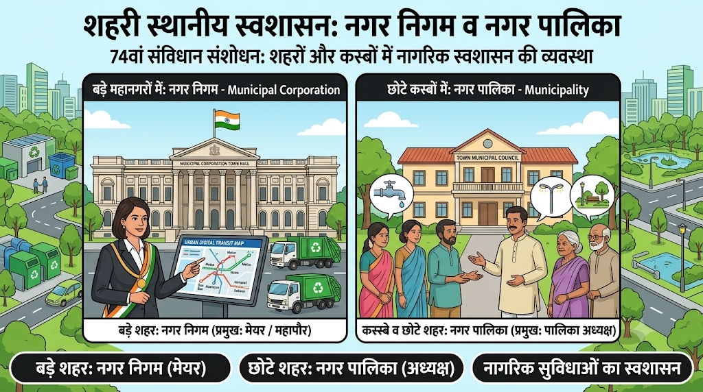
स्थानीय सरकारों को संवैधानिक दर्जा दिए जाने से भारत में लोकतंत्र की जड़ें अत्यधिक गहरी हुई हैं, परंतु अभी भी कई गंभीर चुनौतियां विद्यमान हैं:
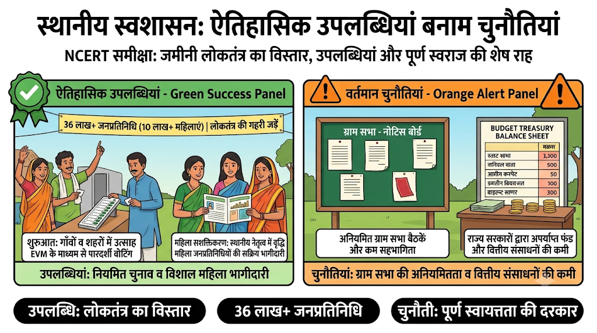
| ऐतिहासिक उपलब्धियां | विद्यमान चुनौतियां |
|---|---|
| 1. विश्व का सबसे बड़ा लोकतंत्र: आज देश भर की पंचायतों और नगर पालिकाओं में लगभग 36 लाख से अधिक निर्वाचित प्रतिनिधि हैं, जो दुनिया के कई देशों की कुल जनसंख्या से भी अधिक है। | 1. ग्राम सभा की अनियमितता: हालाँकि चुनाव नियमित होते हैं, परंतु अधिकांश राज्यों में ग्राम सभा की नियमित बैठकें नहीं बुलाई जातीं और नागरिकों की सीधी भागीदारी कम रहती है। |
| 2. विशाल महिला सशक्तिकरण: 33% आरक्षण के चलते 10 लाख से अधिक महिलाएं निर्वाचित पदों पर पहुँचकर समाज का नेतृत्व कर रही हैं। | 2. शक्तियों का अधूरा हस्तांतरण: अधिकांश राज्य सरकारों ने संविधान के 11वें व 12वें शेड्यूल में दिए गए 29 विषय स्थानीय निकायों को पूरी तरह नहीं सौंपे हैं। |
| 3. लोकतांत्रिक चेतना: स्थानीय समस्याओं का निपटारा स्थानीय स्तर पर होने से आम जनता में अपने अधिकारों के प्रति जागरूकता बढ़ी है। | 3. वित्तीय संसाधनों की कमी: पंचायतों और नगर पालिकाओं के पास अपने स्वतंत्र कमाई के साधन बहुत सीमित हैं; उन्हें आज भी राज्य सरकारों के फंड और अनुदान की दया पर निर्भर रहना पड़ता है। |
💡 बोर्ड परीक्षा हेतु अति-महत्वपूर्ण त्वरित स्मरणीय तथ्य
- एकात्मक शासन वाले देश: ब्रिटेन, श्रीलंका, चीन, फ्रांस (एकल केंद्रीय सत्ता)।
- संघात्मक शासन वाले देश: भारत, अमेरिका, बेल्जियम, कनाडा, ऑस्ट्रेलिया (बहु-स्तरीय सत्ता)।
- साथ आकर संघ: USA, स्विट्जरलैंड, ऑस्ट्रेलिया (राज्यों को समान अधिकार)।
- साथ लेकर संघ: भारत, स्पेन, बेल्जियम (केंद्र अधिक शक्तिशाली)।
- संघ सूची: रक्षा, विदेश, बैंकिंग, संचार, मुद्रा (केवल केंद्र सरकार)।
- राज्य सूची: पुलिस, व्यापार, कृषि, सिंचाई, जेल (केवल राज्य सरकार)।
- समवर्ती सूची: शिक्षा, वन, मजदूर संघ, विवाह (दोनों बना सकते हैं; विवाद में केंद्र मान्य)।
- अवशिष्ट शक्तियाँ: कंप्यूटर सॉफ्टवेयर, साइबर कानून (केवल संसद/केंद्र)।
- 1956: राज्य पुनर्गठन आयोग द्वारा भाषाई राज्यों का गठन।
- 22 अनुसूचित भाषाएँ: संविधान की 8वीं अनुसूची में हिंदी व 21 अन्य भाषाओं को समानता।
- 1990 का दशक: गठबंधन राजनीति का दौर और राज्यों की स्वायत्तता का सम्मान।
- 1992 का ऐतिहासिक विकेंद्रीकरण: 73वां (पंचायती राज) व 74वां (नगर पालिका) संविधान संशोधन।
- महिला आरक्षण: स्थानीय निकायों में कम से कम 33% सीटें महिलाओं हेतु अनिवार्य रूप से आरक्षित।